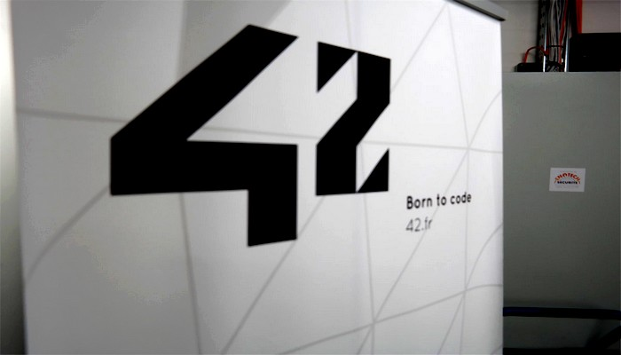
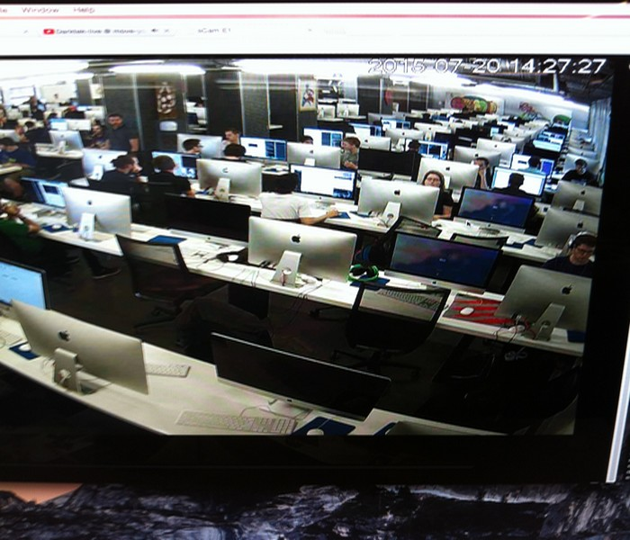
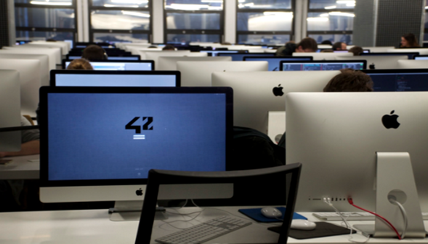

L'école 42 :
Durant ma première année, j'ai passé un mois de concours 7 jours sur 7 et 24h sur 24 à l'école 42 de Paris.
Les école 42 : sont deux écoles privées d’informatique en France et aux États-Unis. Elles ont été créées et sont financées par Xavier Niel (fondateur d'Iliad-Free) avec plusieurs associés, dont Nicolas Sadirac (ancien directeur général d'Epitech)2, Kwame Yamgnane et Florian Bucher (anciens cadres d'Epitech)3.
La piscine: Faut il savoir nager ?
"C’est l’épreuve de la « Piscine » qui décide de votre admission définitive à 42. Pas de natation, mais à la manière des swim qualifications des commandos de Marines, une immersion dans le grand bain qui nous permet d’identifier les plus motivés et de confirmer l’aptitude des étudiants « admissibles » pour le développement informatique. Concrètement, la « Piscine » est en réalité une chance, un mois passé dans les locaux de 42 à Paris pour vraiment découvrir l’école, sa méthode unique et bien sûr ce qu’est vraiment la programmation."

Le déroulement :
Une liste d'exrcice est donnée par jour et à rendre avant 23h42 de la journée suivante. Tout le monde dois se débrouiller et s'entre-aider. On doit également corriger 5 personnes et se faire corriger par 5 personnes. En fin de chaque semaine, un examen de 4h sur machine et sans aide est à passer. Un projet en groupe à rendre chaque semaine. Il y a également 2 rush de 24h, ou un exercice tombe toutes les heures. Tout les exercices sont à faire.

Le contenue :
- Les commandes linux.
- les commandes de Emac, découverte de Emacs et Vim.
- Git.
- Developpement sous Linux.
- Types de variable, structure d'un programme.
- Les fonctions, les tableaux.
- Les structures de données.
- Les types d'instructions.
- Les opérateurs.
- Les structures de contrôles.
- Les commentaires.
- L'indentation.
- Les pointeurs.
- Le déférencement.
- Arithmétique des pointeurs.
- Manipulation de chaines.
- La récursivité.
- les librairies.
- les arguments et parametres.
- les spécificateurs de formats.
- Allouer dynamiquement de la memoire.
- Les types de fichiers.
- Les flags.
- La norminette, les normes.
- Inclusions multiples.
- Les stuctures.
- Makefile.
- Les pointeurs sur fonctions.
- Les listes chainés.
Mon exeperience :
Ces 4 semaines ont été une experience formidable même si je n'est pas était admise à l'ècole. Ce fut trés enrichissant, j'ai rencontrer beaucoup de personne passionné d'informatique, de développement, de sécurité, de jeux vidéos. Mais aussi Xavier Niel et Francois Hollande lors d'une soirée spéciale organisé par l'école. Ce fut également locasion de pouvoir profiter de tout le matériel mis a disposition par l'école. Etant une élève du Cned se fut aussi pour moi l'ocalision de travailler en groupe sur un projet.
.jpg)